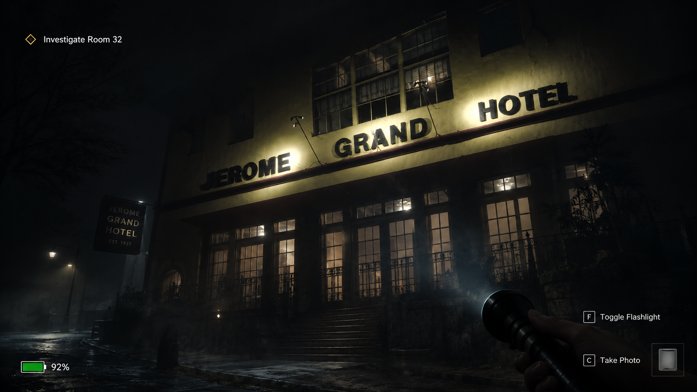

Investigate
All 12 main locations are canonical story spaces. Clues and events can move between valid positions, but the underlying history remains consistent.
Haunted Echoes Studios — Canon v2.0
A four-investigator cooperative paranormal investigation and survival-horror mystery set in modern-day Jerome, Arizona.
The mystery begins with a December 3, 1928 mine-breach cinematic. In the present day, four player-defined investigators enter real Jerome locations, uncover a fixed supernatural history through randomized evidence placement, resolve eight trapped miner souls, and eventually return to Haynes for the final binding.

Canon v2.0
Replayability comes from where evidence appears, how encounters unfold, and how the AI Director pressures the team — not from changing what actually happened in 1928.
All 12 main locations are canonical story spaces. Clues and events can move between valid positions, but the underlying history remains consistent.
Each miner’s corrupted loop must be understood and resolved. When a miner is released, that soul lights one vessel in the talisman.
The investigation ultimately returns to Gold King Mine & Ghost Town / the historical Haynes site for the final binding and ending.
Locked Main Locations
The old “eight locations, choose four” structure has been retired. The full set below is now part of the canonical investigation framework.
Historic hospital and hotel layers anchor the modern investigation and the earliest major supernatural escalation.
The story ultimately returns to the historical Haynes site for the binding attempt and the final outcome.
A major historical location used for evidence, story progression, and the town’s mining-era context.
A locked story location at Main Street and Jerome Avenue, tied into the investigation route through central Jerome.
One of the canonical investigation spaces used to uncover evidence and move the story forward.
A modern Jerome landmark folded into the supernatural investigation and the town’s living history.
A canonical exploration site where environmental storytelling and paranormal pressure can intensify.
A historic location connected to Jerome’s mining history and the wider evidence network.
A canonical town location supporting investigation, environmental storytelling, and encounter variation.
A Main Street landmark used as one of the game’s locked story locations.
A cemetery investigation space tied to death records, memory, and the town’s unresolved past.
A church location supporting the spiritual, ritual, and historical side of the investigation.
Secondary Jerome Layer
These locations support evidence, history, encounters, traversal, and story connections around the primary route.
The talisman is discovered at Laura Williams Memorial Park. It contains nine soul vessels: eight for the trapped miners and one possible final vessel for Elias.
One-Way Progression
Once a story location closes, players cannot freely revisit it unless an authored event specifically reopens it. The route moves forward, but every closure must preserve at least one valid path to each ending that is still available.
This makes evidence decisions meaningful without turning the mystery into random truth. Players may miss information, interpret clues differently, or reach the finale under greater pressure — but Jerome’s history does not rewrite itself between runs.
The Eight Miners
Each miner is a supernatural miniboss and containment anchor. Their professions are locked; their exact assignment among the main locations remains part of the field-reference/photo-survey work.
Foreman
Blaster
Surveyor / cartographer
Master timberman
Hoist operator
Pump / ventilation operator
Ore examiner
First-aid attendant / medic
Adaptive AI Director
The AI Director reacts to team performance without changing the mystery’s canon.
Elias Vance Finch
Elias caused the 1928 breach and guides the modern investigators toward the ritual he needs. His role is intentionally unstable: he can continue serving the entity, or reject it at the end.
On the redemption path, Elias willingly fills the ninth vessel. That choice creates the true binding and changes the final outcome.
Locked Endings
Bad ending. The ninth vessel remains dark and the entity’s plan succeeds through the unresolved breach.
The team survives and contains the immediate threat, but the debt is not fully resolved.
True ending. Elias rejects the entity and willingly completes the talisman as the ninth soul.
The prison fails. The team loses control of the binding and the supernatural threat breaks free.
Current Production Status
The project is beyond the old generic concept page. The next production milestone is field-reference and photography work in Jerome so the locked locations can be translated into accurate exterior and interior game environments.
Narrative truth, major progression, 12 main locations, 10 secondary locations, miner roster, talisman structure, Elias arc, and endings are defined.
The technical direction remains Unity for first-person exploration, cooperative systems, adaptive encounters, environmental storytelling, and supernatural effects.
Capture exterior and interior reference photography, confirm access and sightlines, and use those references to finalize miner/location assignments and environment blockouts.

Haunted Echoes Studios
Arizona Paranormal Project — Jerome is being developed as a historically grounded supernatural mystery using real locations, a fixed underlying truth, adaptive encounters, and cooperative pressure.
Visit Haunted Echoes StudiosView Ghostline Chess